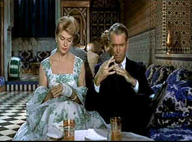
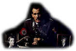

| Man Who
Knew too Much (SE)/B+B+ |
| Universal |
I remember forever whistling Que Sera Sera in my teens after seeing The
Man Who Knew Too Much. I guess I must have a soft spot for the film. Those two cymbals about to
fatefully come together make a wonderful image for the film. This is Hitchcock in fine form,
maintaining suspense with grand brilliance.
Hitchcock made this movie once before in 1934 during his British
filmmaking tenure. Adding color, and making it more colorful, Hitchcock has topped his fine first
effort, using the skills developed over two additional decades of making movies. It doesn't hurt to
have James Stewart and Doris Day as his stars this time around. The first film featured Leslie
Banks and Edna Best.
Doctor Ben McKenna, his lovely wife Jo, a former popular singer, and their
precocious ten-year-old son Hank are vacationing in Morocco. When the McKennas stumble into elusive
Frenchman Louis Bernard, the meeting stands theirs lives on end. It all climaxes across the ocean
in Britain's Royal Albert Hall with the fateful crash of the cymbals.
 |
| Knees up Hank McKenna. ©Universal |
Hitchcock keeps The Man Who Knew Too Much moving with incisive
direction. The master director's sense of humor is in good form, using the setting to extract the
laughs., without slacking the pace. The scenes of Stewart/McKenna at the Moroccan restaurant
are precious. Hitchcock relishes Stewart discomfort. I am sure the rather large Hitch has often
suffered discomfort in similar circumstances. The taxidermy shop is an inspired setting for a scene
and Hitchcock makes the most of the stuffed animals and stuffed British too.
Filmed on location and in the studio, there are plenty of process shots in
evidence. They blend quite well, however. The sets are outstanding, including the drolly cluttered
taxidermy shop, the opulent Moroccan restaurant, and Royal Albert Hall. Scenes were shot in the
actual hall and recreated on a set for detailing.
James Stewart is a forceful presence in Ben McKenna. He's a terrific ordinary
man hero. He's willing to do whatever he must to save the day. And, Day, Doris that is, is as
lovely as can be. She really hits the right notes. She gets to sing with charm and fear the
memorable Que Sera Sera. Casting of the supporting roles is outstanding. Very ordinary
Britishers Bernard Miles and Brenda De Banzie are excellent villains. Miles practices evil
with practicality while De Banzie is like a nanny gone wrong. Reggie Nalder invests the assassin
with frightening authenticity.
The Man Who Knew Too Much is far better than when I remembered it
on laser disc last. The DVD transfer is outstanding. It’s hard to believe this film did not go
through a restoration. It looks far better than newly restored Rear Window. It's a sharp
transfer with only minor edge enhancement noticeable. The colors are consistently vital. Even the
rear screen material in Morocco doesn’t look too out of place. The Dolby Digital 2 channel mono
manages to capture the grandeur of the score.
Pat Hitchcock O'Connell narrates the introduction to the documentary outlining
the background details of the film project. She quotes her father's observation to Francois
Truffaut in his Hitchcock interview book: "The first film was done by an amateur and the
remake by a professional." Herbert Coleman, veteran Hitchcock collaborator shares details of
the shoot and screenwriter John Michael Hayes recalls his first meeting with Hitchcock about the
movie. Set Designer Henry Bumstead warmly recalls how he teamed up with Hitchcock for The Man
Who Knew Much and so of the details of working with the man. Bernard Hermann scholar Steven C.
Smith talks about the composer's involvement and the origin of the Academy Award© winning song.
song.
|
|
|
|

The
Movie Poster Archive includes extensive poster images from the films of stars like Susan Hayward,
Kirk Douglas, Katharine Hepburn and many more. Our featured star is Doris Day.

Mother Night/A-/A-
The eccentric style of Nick Nolte is perfect for the angst ridden
Howard W. Campbell, Jr., a hero or a villain.


Easy to use interface with lots of vintage posters for sale.

The home of Francis Ford Coppola's Zoetrope
Studios has more corridors of interest than you might expect.
The
Films2 website contains Films2.com is a comprehensive film website, providing a searchable shop
of new and archived video and region 2 DVDs to buy. You can check local cinema listings, read the
latest film news, reviews and gossip, and see the latest film trailers.

The National Film Preservation Foundation (NFPF) is the nonprofit organization created by the U.S. Congress to save
America's film heritage.
|